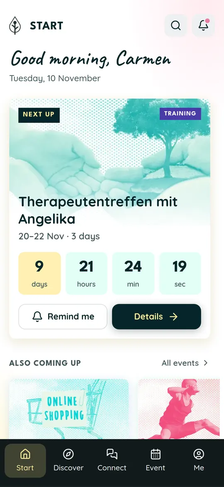
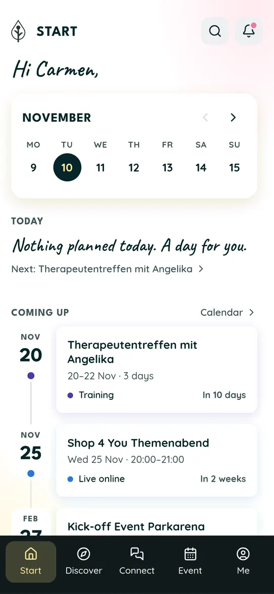
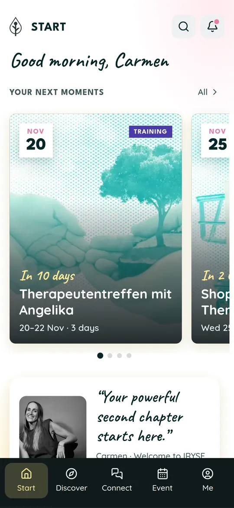
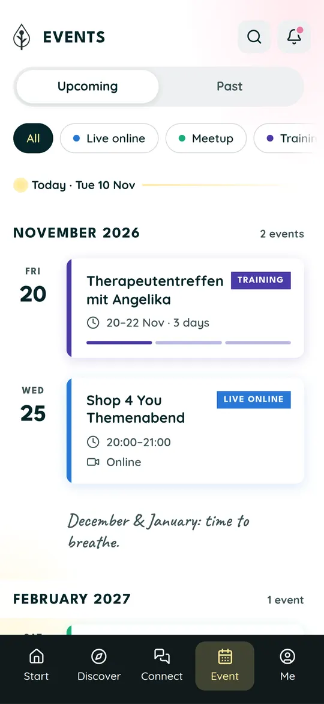
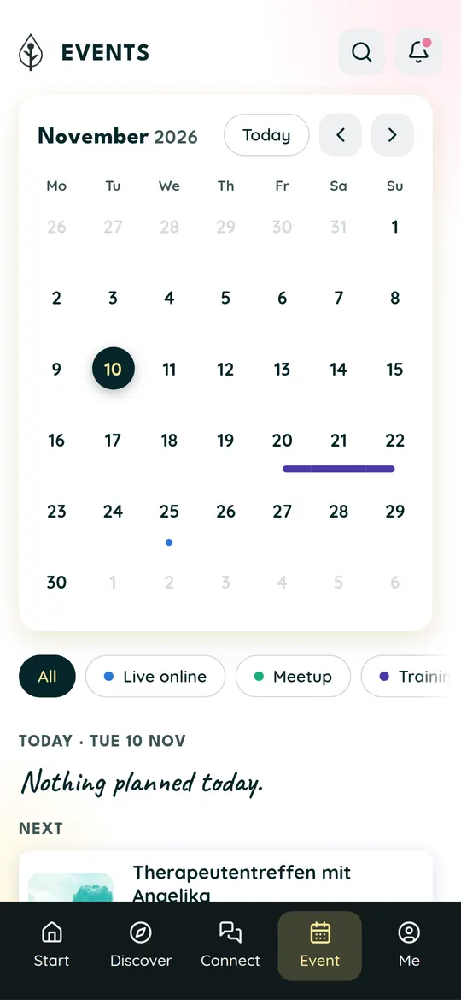
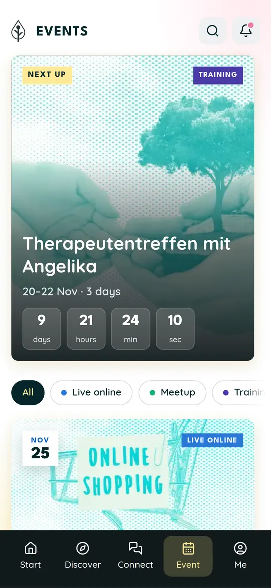

Warmer Gruß, darunter der nächste Termin groß mit Bild und laufendem Countdown, danach die weiteren Termine zum Wischen.
Öffnen → Sisterhood App
Sisterhood AppStartseite & Events: sechs Entwürfe
Jeder Entwurf lässt sich am Handy antippen: Termine öffnen sich mit Datum, Erinnerung und „In meinen Kalender“. Unten in der Leiste wechselst du zwischen Start und Event. Die Termine sind Carmens echte Termine aus dem Iryse-Kalender.
Startseite

START AAls Nächstes

START BWochenband
Die nächsten Wochen als Leiste zum Antippen, darunter eine Zeitleiste aller Termine und eine Ankündigung von Carmen.
Öffnen →
START CMomente
Große Bildkarten der nächsten Termine zum Durchwischen, ein Satz von Carmen und ein Termin, auf den man sich freuen kann.
Öffnen →Events

EVENTS AAgenda
Alle Termine als ruhige Liste nach Monat und Tag, mit Filter nach Art und einem Reiter für vergangene Termine.
Öffnen →
EVENTS BMonatskalender
Der Monat auf einen Blick, mehrtägige Termine als Balken; ein Tag zeigt seine Termine, ein freier Tag den nächsten.
Öffnen →
EVENTS CBilder-Stream
Der nächste Termin groß mit Countdown, darunter Bildkarten mit Erinnern, Kalender und Teilen, am Ende die Erinnerungen an vergangene Events.
Öffnen →Entwürfe vom 10.11.2026. Titel und Zeiten stammen aus dem Kalender „7 Iryse Team“. Die Farben nach Art (Live online, Meetup, Training, Celebration, Trip), Orte, Online-Knopf und Bilder sind Vorschläge: Im Kalender stehen heute nur Titel und Zeit. Erinnerungen werden hier nur im Browser gemerkt.